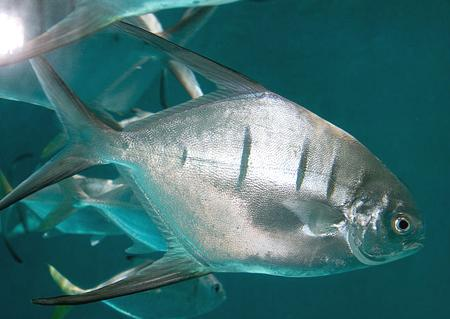

Pompano (Great Pompano)

[Old Wife, Banner Pompano, Palometa, Cobbler, Gafftopsail (Caribbean);
Trachinotus goodei]
This fish is native to the West Atlantic coast from Massachusetts to
Argentina, including Bermuda, the Caribbean Islands, and Gulf of Mexico.
It can grow to 19-1/2 inches and 1-1/4 pounds, but is commonly 14 inches.
It is primarily a game fish, but there is some small commercial fishing in
the Caribbean, and minor aquaculture in Florida. IUCN Red List LC (Least
Concern).
Photo by Brian Gratwicke distributed under license
Creative Commons
Attribution 2.0 Generic.
More on Pompano Family
General:
I have no first hand knowledge of this fish, but
prep and cooking are probably similar to the
Golden Pompano
Buying:
There are minor commercial fisheries in the
Caribbean region, so it is probably available in local fish markets there.
It is totally unavailable here in Southern California.
Health:
In reef areas, there have been reports of
ciguatera poisoning.
sf_pompcz.html 070616 r101124 - www.clovegaren.com
©Andrew Grygus - info@clovegarden.com - Photos on
this page © cg1 - Linking to and
non-commercial use of this page permitted